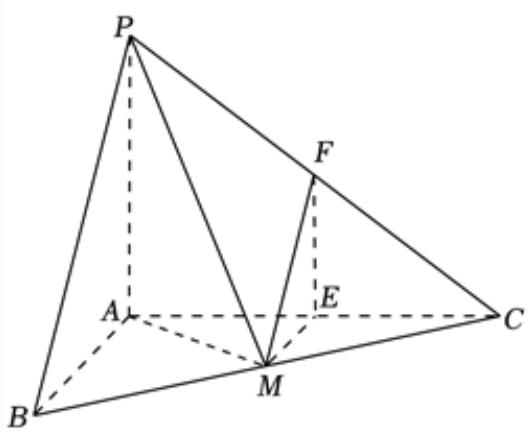

01 【来源：23春考·1】
查看所属专题已知集合 ，，且 ，则 ______。
答案与解析
答案
2
解析
两集合相等，，故 。
整卷阅读 · 教师版 · 21 题
按来源题号排列；内容来自分类汇编，仍需回源核对。
没有找到匹配题目。
已知集合 ，，且 ，则 ______。
2
两集合相等，，故 。
已知向量 ，，则 ______。
(1,0)
。
不等式 的解集为______。（结果用集合或区间表示）
[-1,3]
不等式|x-1|≤2即为-2≤x-1≤2,
即为-1≤x≤3,
则解集为[-1，3]，
故答案为：[-1，3].
已知圆 的一般方程为 ，则圆 的半径为______。
配方得 ，圆心为 ，半径为 。
已知事件 的对立事件为 ，若 ，则 ______。
0.5
事件A的对立事件为Ã,
若P(A)=0.5，则
故答案为：0.5.
已知正实数 满足 ，则 的最大值为______。
正实数a、b满足a+ 4b = 1，则 当且仅当 时等号成立.
故答案为：
某校抽取 100 名学生测身高，其中身高最大值为 ，最小值为 ，根据身高数据绘制频率组距分布直方图，组距为 5，且第一组下限为 153.5，则组数为______。
7
极差为186－154= 32，组距为 5，且第一组下限为153.5，
，故组数为7组，
故答案为：7.
设 ，则 ______。
17
根据题意及二项式定理可得：
故答案为：17.
已知函数 ，且 则方程 的解为______。
x = 3
当x≥0时，g(x)=2,即 ，解得 。
当x < 0时， ，解得x = 0（舍)；
所以g(x) =2的解为：x =3.
故答案为：x = 3.
为了学习宣传党的二十大精神，某校学生理论宣讲团赴社区宣讲，已知有 4 名男生，6 名女生，从 10 人中任选 3 人，则恰有 1 名男生 2 名女生的概率为______。
0.5
从10人中任选3人的事件个数为 恰有1名男生2名女生的事件个数为 则恰有1名男生2名女生的概率为 故答案为：0.5.
已知 且 （ 为虚数单位），满足 ，则 的取值范围为______。
设 。
由 ，得 ，所以 的值域是 ，从而绝对值部分取遍 。
故所求范围为 。
已知 为空间中三组单位向量，且 ，， 与 夹角为 。点 为空间任意一点，且 ，满足 ，则 最大值为______。
取 ，设 。
记 、，则 。
由平方展开 故 最后一步的差为 。
所以 。
取 、 时取等号，故最大值为 。
下列函数是偶函数的（ ）。
A.
B.
C.
D.
B
为偶函数； 为奇函数， 非奇非偶。因此选 B。
如图为 2017—2021 年上海市货物进出口总额的条形统计图，则下列对于进出口贸易额描述错误的是（ ）。

A. 从 2018 年开始，2021 年的进出口总额增长率最大；
B. 从 2018 年开始，进出口总额逐年增大；
C. 从 2018 年开始，进口总额逐年增大；
D. 从 2018 年开始，2020 年的进出口总额增长率最小。
C
按所附图表，2018—2021年进出口总额依次为30.50、31.57、32.22、39.10；2019—2021年同比增长率约为3.51%、2.06%、21.35%。2020年进口额较2019年减少，故C不成立，原参考答案为C。若A、D只比较2019—2021年的同比增长率，则两项成立；若“从2018年开始”包含2018年的同比增长率，因图中缺少2017年数据，不能判断A、D是否成立。
题干与图题的地区、年份不一致，保留来源疑点，不能据此图直接确认题干所说地区的统计事实。
如图所示，在正方体 中，点 为边 上的动点，则下列直线中，始终与直线 异面的是（ ）。

A.
B.
C.
D.
B
直线 与底面交于 ，而 ，且 不平行于底面，因此 与 恒异面。
其余选项可用特殊位置排除： 为 中点时 与 相交； 时 ，且 与 相交。
故选 B。
已知无穷数列 的各项均为实数， 为其前 项和，若对任意正整数 都有 ，则下列各项中可能成立的是（ ）。
A. 为等差数列， 为等比数列；
B. 为等比数列， 为等差数列；
C. 为等差数列， 为等比数列；
D. 为等比数列， 为等差数列。
C
由 最终严格递减，知 有界，故 有界。
若某个奇数项或偶数项子列为等差数列，其公差只能为 ，即为常数 。
另一子列若为等比数列且公比绝对值小于 ，由 有界可得 ；若公比为 ，同样得 ；这些情形均使相邻两个部分和相等，矛盾。
若公比为 ，两子列都是常数，有界性要求两常数互为相反数，部分和周期重复，亦矛盾。
非零等比数列公比绝对值大于 又与项有界矛盾。
因此 A、B 不可能。
若尾部为等差数列，其公差因有界性为 ，其常数项又因部分和有界只能为 ，仍违反严格不等式，故 D 不可能。
C 可以成立：令前 项成等差数列，，于是 ；从 起令公比为 。
后续每项均为负，且负项总和为 ，所以此后的 且严格递减，从而 。
故选 C。
校订说明：原解析的例子没有把第 项纳入同一等比数列，已改为满足交叠项条件的构造。
已知三棱锥 中， 平面 ，，，， 为 中点，过点 分别作平行于平面 的直线交 于点 。

（1）求直线 与平面 所成角的大小；
（2）求直线 到平面 的距离。
2
（1） 平面 ，故 的底面投影为 ，所求角为 。
由 得 ； 为斜边中点，。
于是 ，所求角为 。
（2） 且 ，所以 平面 。
又 平面 ，而 平面 ，故 ，由中位线性质 为 中点。
因此 正是直线 到平面 的距离。

在 中，角 所对应的边分别为 ，其中 。
（1）若 ，，求边长 ；
（2）若 ，，求 的面积。
（1），由正弦定理及 ，有 ，故 。
于是 。
（2）由正弦定理， 化为 。
约去正数 ，得 。
又 ，排除 ，故 。
于是 ，面积为 。
为了节能环保、节约材料，定义建筑物的“体形系数” ，其中 为建筑物暴露在空气中的面积（单位：平方米）， 为建筑物的体积（单位：立方米）。
（1）若有一个圆柱体建筑的底面半径为 ，高度为 ，暴露在空气中的部分为上底面和侧面，试求该建筑体的“体形系数” ；（结果用含 的代数式表示）
（2）定义建筑物的“形状因子”为 ，其中 为建筑物底面面积， 为建筑物底面周长，又定义 为总建筑面积，即为每层建筑面积之和（每层建筑面积为每一层的底面面积）。设 为某宿舍楼的层数，层高为 3 米，则可以推导出该宿舍楼的“体形系数”为 。当 ， 时，试求当该宿舍楼的层数 为多少时，“体形系数” 最小。
6
（1）外露表面积 ，体积 ，故 。
（2）代入题设尺寸关系，得 ，。
将 暂视为正实数，求导 唯一极小值点为 。
所以整数最优值只可能为 或 。
计算 、，故 时最小。
校订说明：原解析将 误算为约 ，与后续比较矛盾，已修正。
已知椭圆 。
（1）若 ，求椭圆 的离心率；
（2）设 为椭圆 的左右顶点，椭圆 上一点 的纵坐标为 1，且 ，求实数 的值；
（3）过椭圆 上一点 作斜率为 的直线 ，若直线 与双曲线 有且仅有一个公共点，求实数 的取值范围。
（1） 时 ，所以 。
（2）两顶点为 。设 ，则椭圆方程给出 。题设内积为 ，所以 ，由 得 。
（3）设直线为 。
它与椭圆相交或相切当且仅当 。
与双曲线联立得 相切要求二次项非零且判别式为零，故 、。
于是 且 。
结合题设 ，得 。
已知函数 ，（其中 ，），若任意 均有 ，则称函数 是函数 的“控制函数”，且对所有满足条件的函数 在 处取得的最小值记为 。
（1）若 ，，试判断函数 是否为函数 的“控制函数”，并说明理由；
（2）若 ，曲线 在 处的切线为直线 ，证明：函数 为函数 的“控制函数”，并求 的值；
（3）若曲线 在 ， 处的切线过点 ，且 ，证明：当且仅当 或 时，。
(1)是，见解析
见解析
（1）（），所以 是控制函数。
（2） 时 ，在 处切线为 ，并且 。
故 是控制函数，且 。
任何控制函数在该点都不低于 ，因此 。
（3）切线过 给出 。
代入并因式分解得 ，从而 。
切线为 ，且 所以它是控制函数，且仅在 接触原曲线，故这两点有 。
若 ，任意控制直线 均有 、。
线性插值给出 。
而 本身是控制函数，所以 。
必要性亦成立。